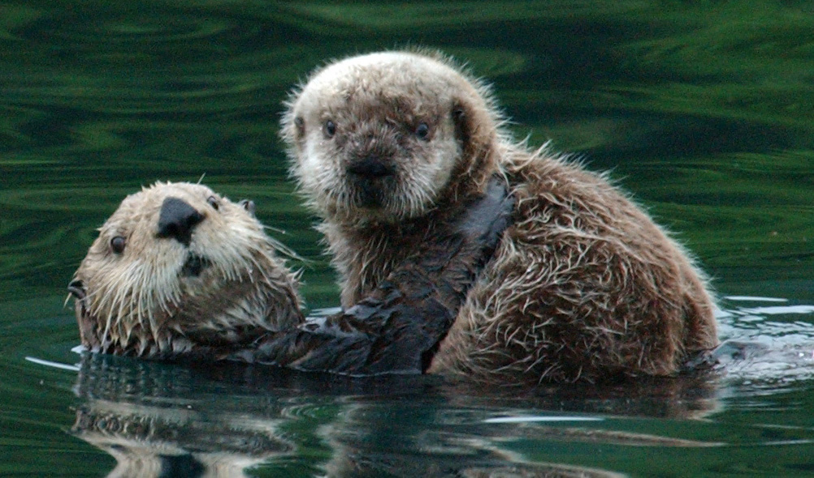
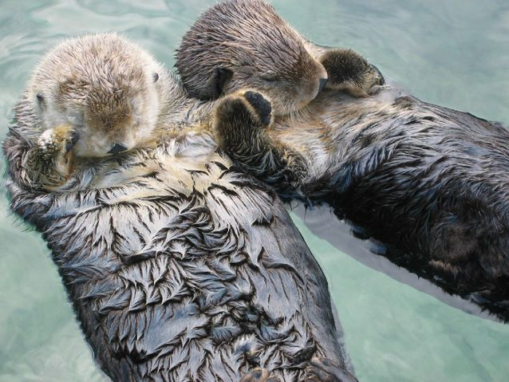

Sea otters are part of the Mustelidae family, which is a family of carnivorous mammals that includes skunks, weasels, wolverines and badgers. Approximately 90 percent of the world's sea otters live in coastal Alaska.
Sea otters are a threatened species due to past over hunting for their beautiful fur. Although sea otters are protected now, they remain vulnerable, especially to oil spills. Unlike other marine mammals, sea otters do not have a blubber layer. Therefore, they rely on their fur to keep warm. If their fur is oiled, it loses its insulating qualities and the sea otters soon chill. Several thousand sea otters died in the 1989 Exxon oil spill in Valdez, Alaska. Sea otters are social animals, with females and pups spending time together in one group and males in another. Pups stay with their mothers for the first eight months of their life. The pups' fur traps so much air that they actually cannot dive under water. When mothers leave the pups wrapped in kelp to hunt, pups bob on the surface of the ocean like a cork. Mothers spend much time grooming pups and often carry them on their chests.
Sea otters are one of the few animals to use tools. They eat animals with shells, like clams and abalone, and use a stone to break open the shells. Adult sea otters can eat 25%-30% of their body weight in one day!
Sea otters are an essential keystone species, that is critical to how an ecosystem functions because it has large-scale effects on the communities in which it lives. Along the Pacific coast, sea otters help control the sea urchin population. Fewer sea urchins in turn help prevent kelp forests from being overgrazed.